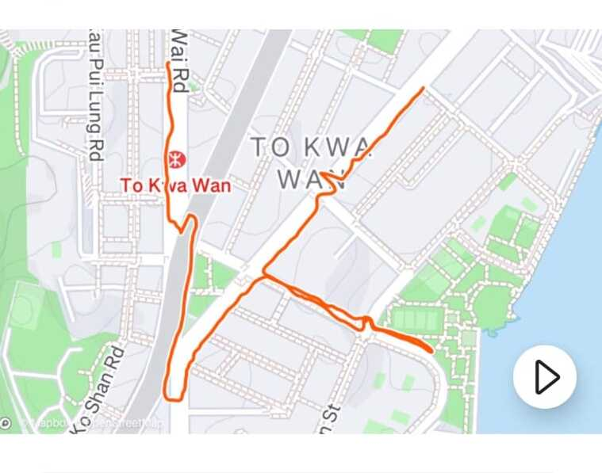
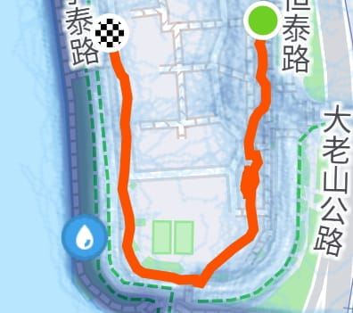
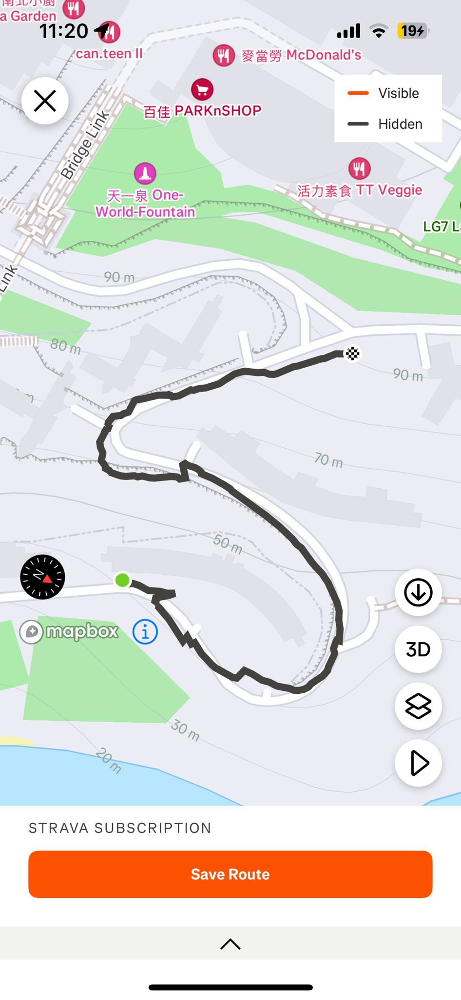
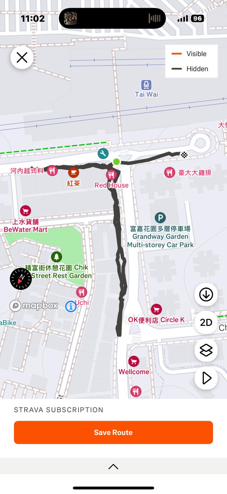
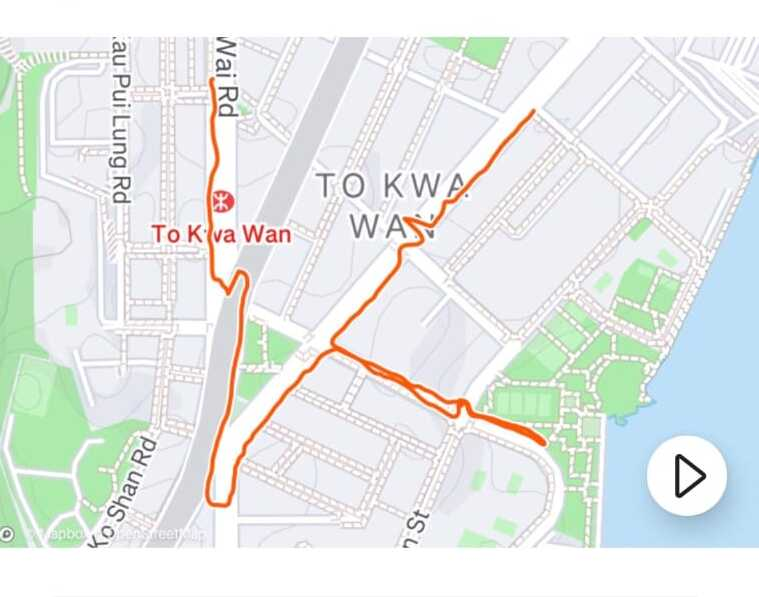
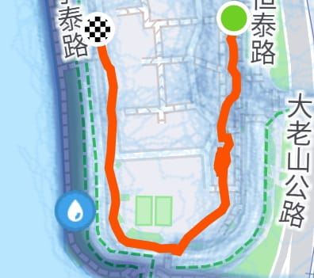
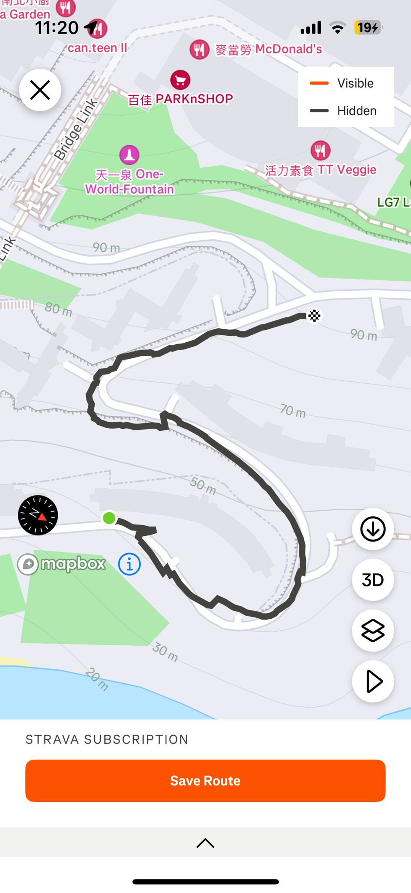
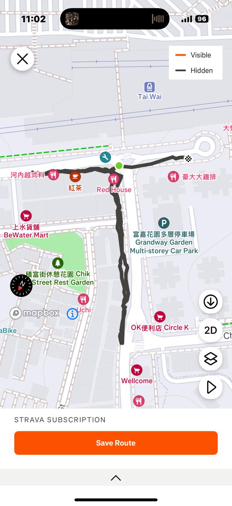

歡迎參加 #行繪香港 步行活動！
11月18日
@walkdrawhk
在這個快節奏的數位時代，運動變得愈發重要。我們發現，許多同學因學業繁忙而忽略了身體健康。為此，我們特別策劃了「行繪香港」步行活動，旨在鼓勵大家通過有趣的方式養成運動習慣。
參加方式
- 自創路線：使用任何追蹤步行的應用程式，創建您自己的圖案或文字。
- 規則：
- 打卡位置：路線必須經過指定的打卡位置。
- 步行距離：至少2公里。
- 分享作品：完成步行後，請將記錄和自拍分享到社交媒體，並使用 #行繪香港 標籤，並標註朋友，挑戰他們一起創作。
獎勵機制
我們的團隊將全程觀察所有挑戰作品，獲得大量讚數或特別有趣的作品將有機會在活動網站上展示。
馬上參加！
例子
@hkust_adventurer, @walk4health, @city_steps, @urban_explorer, @nature_trailblazer
 







等待您的上傳！加入行繪香港，創建您的獨特步行圖案！
下一個創意作品就是您！快來加入行繪香港吧！